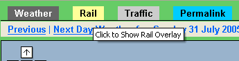
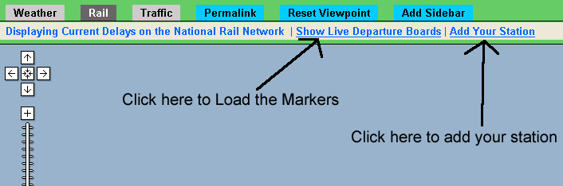
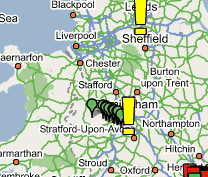
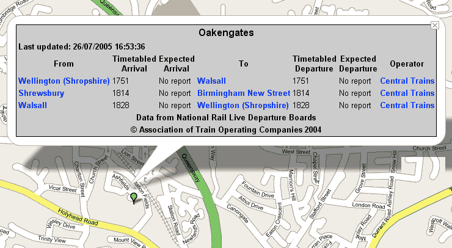
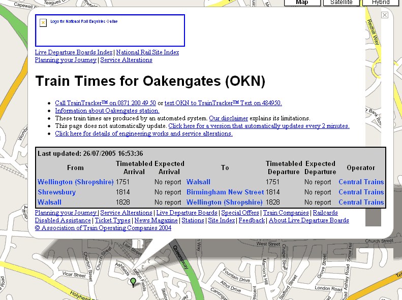

How to load
- Select the Railways Option from the top navigation bar 
- Select the "Show Live Departures Board" Link 
- The Stations available will appear as green icons on the map. To see how to add your own click here 
- Click on an icon, or use the zoom controls to zoom in - then click on a green icon marker: (Firefox Ouput Shown)
- The links open shown open up the relevant page in a new window from the national rail website
- You can then make a permanant link to that page, while the timetable is still shown click on "Permalink" at the top left of the webpage. The page will reload and the address bar will contain the exact url you can bookmark to show the page again with the marker loaded. e.g for Oakengates the url would be http://bbc.blueghost.co.uk/site32.php?type=rail&ldb=y&marker=4&lon=-2.4276351928710938&lat=52.69303188011482&zl=5
Firefox Vs IE
In Firefox, the Javascript implementation can load the html document of the national rail website and I can grab the table holding the data and the div holding any major delays at that station, hence it gives a nice clean output. Internet Explorer doesn't allow me to load the html document as an object, and will only display the full HTML. I am working on fixing this soon either with PHP or with a Javascript solution.
Firefox Version:
I.E Version:

Any Comments then email me @